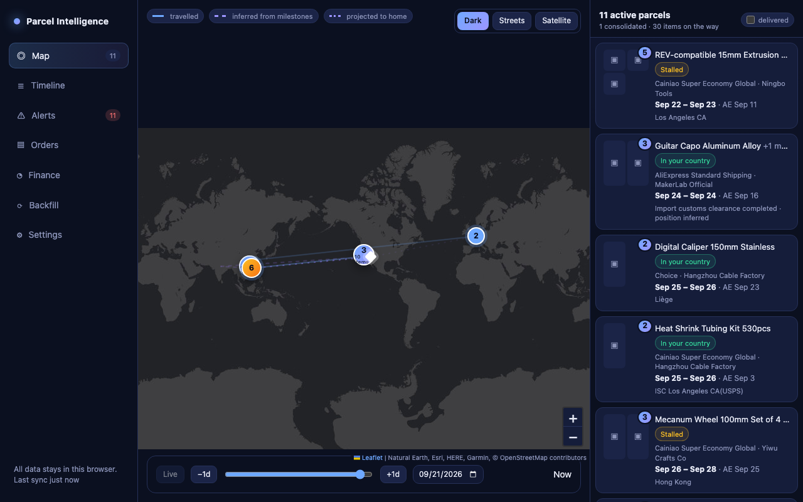
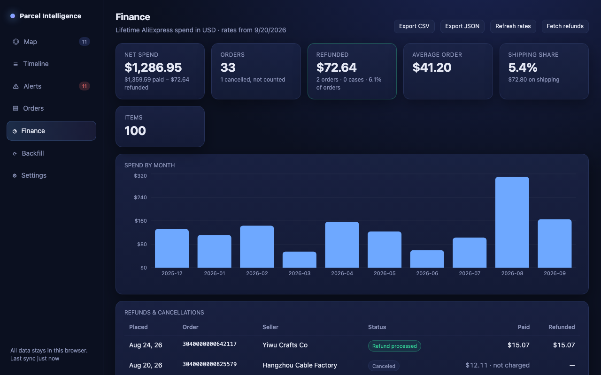

What it does
- Map. Every active parcel at its last known position, the route it has travelled, and the projected remainder to your door. Orders shipped together in one box appear as a single marker.
- Delivery estimates. A P50–P80 window per parcel, re-estimated on every scan, built from how long your past parcels actually took from the same stage with the same carrier. Shown side by side with AliExpress’s promised date.
- Timeline. All in-transit parcels as bars sorted by expected arrival.
- Alerts. Stalled parcels, carrier exceptions, running-late warnings, and a buyer-protection countdown so the window to open a dispute never passes unnoticed.
- Finance. Lifetime and net spend, spend by month, seller and category, shipping share, refunds and cancellations, CSV and JSON export.
- On product pages. “Your history: 14–24 days” next to each shipping option, based on your own parcels with that carrier.

How it works
While you browse your own AliExpress orders, signed in to your own browser, the extension reads the same order and tracking data AliExpress already sends to the page and keeps a local copy. A one-click backfill walks your whole order history. Everything is stored in your browser profile.
Your data never leaves your browser
No account, no backend, no analytics, no telemetry. The developer receives nothing. Read the full privacy policy for the complete list of network requests.
Optional extras, off by default
Bring your own Anthropic API key to classify unusual carrier scan text, geocode odd location names, or get a plain-language explanation of a parcel’s journey. The extension is fully functional without one.